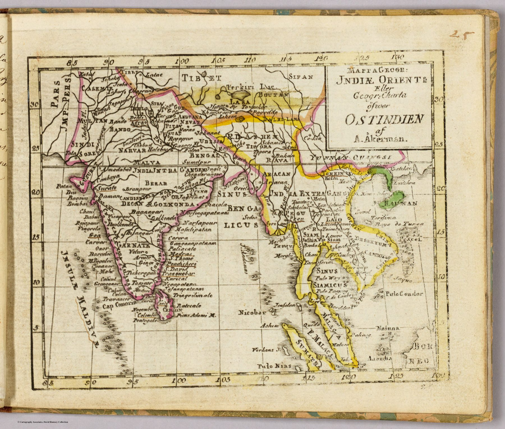

An atlas ‘for the service of youth’
Åkerman, an engraver and globe-maker associated with the Royal Society of Sciences at Uppsala, designed the Atlas juvenilis as a methodical geographical course. This map belongs to the expanded second edition issued after his death. Its compact format, selective labelling and accompanying annotated text were intended for instruction rather than specialist reference.
Reduction and authority
At a scale of roughly 1:50,000,000, India and the wider East Indies must be simplified drastically. Its significance lies in what it assumes. A standard European outline and nomenclature can now be compressed without explanation because the larger cartographic consensus already exists behind it.
The gaze
Uppsala schoolboys learned India at one to fifty million. Nothing on the sheet needed defending, because Åkerman could rely on an outline his pupils’ teachers already accepted, and the annotated text did the rest. The subcontinent arrives in Sweden as a settled fact to be memorised.